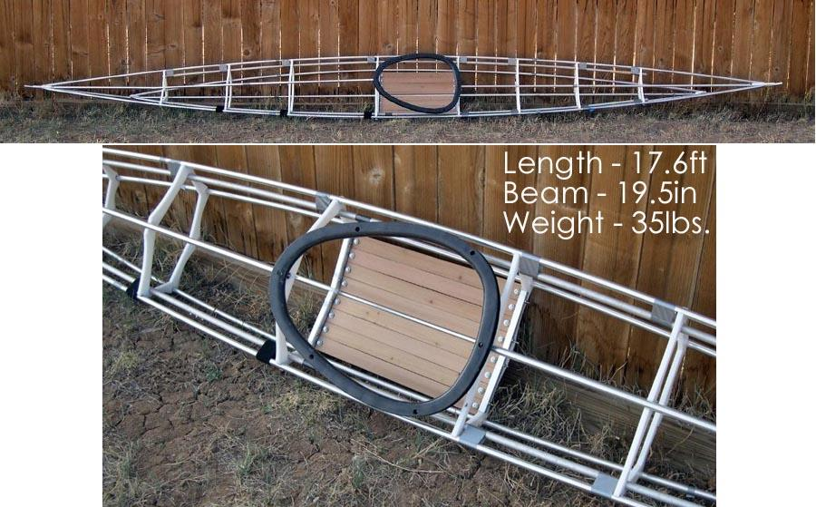

| Sea Ranger, LC, ST, and Sea Ranger Stripper | Menu Previous Page Next Page |
|

The Sea Ranger folding Greenland kayak is a larger displacement version of the Sea Rover. It's designed to be an all around performer
like the Sea Rider. The low aft deck 6in ( 15.2cm) provides 2.2in (5.5cm) of freeboard at the designed displacement. Maximum paddler weight is 200lbs (91 kilos). Coaming size is 22" X 16" (56 X 40.5cm). The Sea Ranger is featured in the frame construction section of this manual. 6063-T832 aluminum tubing replaces 6061-T6 on this kayak. 6063 is higher in corrosion resistance and has a polished look. The Sea Ranger Offsets are at the end of this section. Use the (BACK) key to return.
The Sea Ranger LC has a larger 30 X 16in (76 X 40.5cm) coaming. The aft deck is 1in ( 2.54cm) taller at the low point 7in ( 17.8cm) for greater freeboard. The beam is wider at 20.25in (51.5cm). There are seven cross sections vs eight for the standard Sea Ranger. The Sea Ranger LC Offsets are at the end of this section. Use the (BACK) key to return. The Sea Ranger ST is the "Sports Touring" version of the standard Sea Ranger with a taller flat aft deck 8.5in (21.5cm), taller peak 10.75in (27.3cm), larger coaming 30 X 16in (76 X 40.5cm) and straight forward deckridge. The taller deckridge provides greater gear storage aft and foot room forward.There are 7 cross sections. The Sea Ranger ST Offsets are at the end of this section. Use the (BACK) key to return. The Sea Ranger Stripper is a standard Sea Ranger with cross section offsets provided at every foot along it's length for making woodstripping stations on a strongback. Similar offsets will be provided for several kayaks in the manual. The Sea Ranger Stripper Pics / Offsets are at the end of this section. Use the (BACK) key to return. |
|